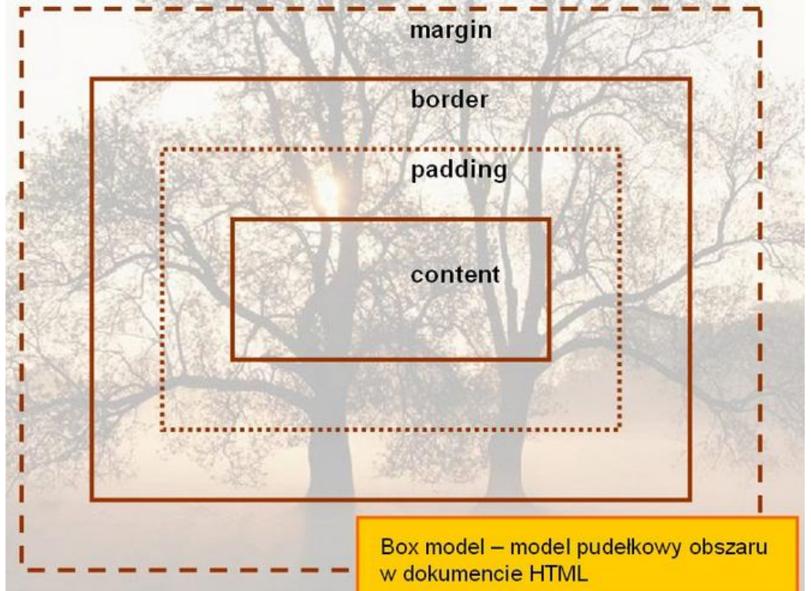
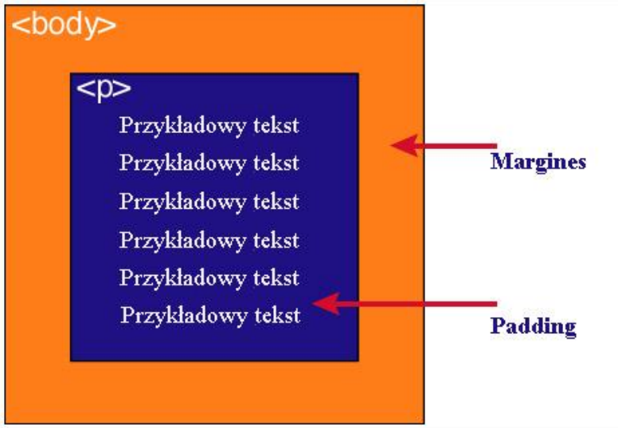

Podaj definicję modelu pudełkowego.
Każdy element w dokumencie HTML, otacza się prostokątnym obszarem zwanym pudełkiem
(ang. Box model). Pudełko składa się z kilku warst.
Tabela
| zawartość | Opis |
| content | zawartość elementu (np.: tekst, obrazek) |
| padding | otaczające marginesy wewnętrzne, odstęp między obramowaniem i zawartością elementu |
| border | obramowania wokół zawartości elementu, ma styl i kolor. |
| margin | marginesy wokół ramki (margines zewnętrzny). Jest to pusty obszar wokół ramki, który nie ma koloru tła i jest przeźroczysty. |
Uwaga1
Padding, border i margin mogą mieć zerową wartość.
Uwaga2
Tło elementu jest określone dla wszystkich z podanych powyżej obszarów z wyjątkiem marginesów zewnętrznych, które zawsze są przezroczyste (transparent).
Grafikę obrazującą model pudełkowy.

Grafikę obrazującą różnicę pomiędzy paddingiem i marginesem wraz z opisem.
Padding określa przestrzeń wokół danego elementu, np: p lub div, natomiast margines przestrzeń pomiędzy elementami.

Jak widać na rysunku, padding oznaczony jest kolorem niebieskim. Określa on wielkość przestrzeni wokół elementu p. Element ten posiada również margines zaznaczony kolorem pomarańczowym. Jest to odległość od brzegu elementu body.